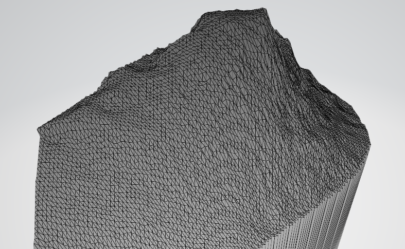

GPX to OBJ
This is a tool to help turn GPX files into OBJ files. The GPS exchange format (GPX for short) is a format used to store coordinate data.
It is most commonly used for paths in Google maps. So why would you convert paths to 3D OBJ files? Well, if you go into the desktop version of Google Maps,
you can draw paths, and if you wildly scribble a dense enough path down, you can use to height of each point to create a 3D model of that area of the map.
So in truth this is more of a google maps exporter than anything.
- Heres the github page.
- Heres the github page.